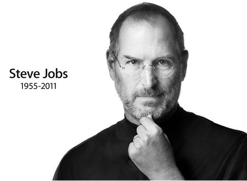

在扎克伯格的常用词典中，有这样一些词汇：透明度、信任、联系、分享。扎克伯格在Facebook的个人页面上这样描述自己的兴趣：开放，创造事物帮助人们彼此联系和分享对自己而言重要的事情，革命，信息流，极简主义。他说：“一个透明度高的世界，其组织会更好，也会更公平。” 在扎克伯格的常用词典中，有这样一些词汇：透明度、信任、联系、分享。扎克伯格在Facebook的个人页面上这样描述自己的兴趣：开放，创造事物帮助人们彼此联系和分享对自己而言重要的事情，革命，信息流，极简主义。他说：“一个透明度高的世界，其组织会更好，也会更公平。”

在扎克伯格的常用词典中，有这样一些词汇：透明度、信任、联系、分享。扎克伯格在Facebook的个人页面上这样描述自己的兴趣：开放，创造事物帮助人们彼此联系和分享对自己而言重要的事情，革命，信息流，极简主义。他说：“一个透明度高的世界，其组织会更好，也会更公平。”